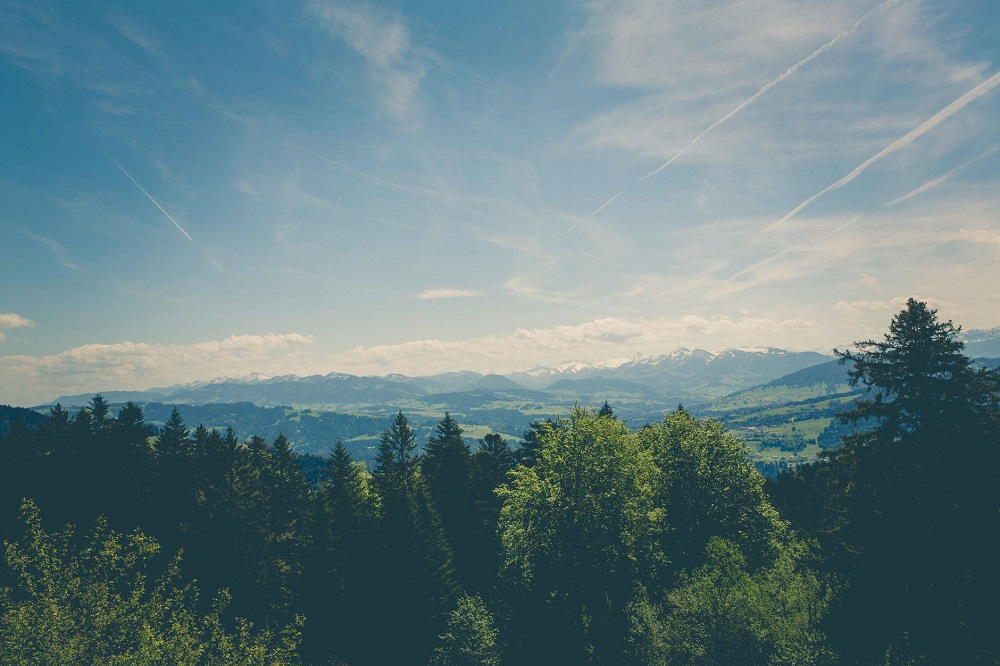

Importance of nature
Nature
It’s easy to think nature will always be with us. But even in my lifetime, birds like starlings and house sparrows have declined so much they’re now listed as endangered.

History of photography
Photography
History of photography, method of recording the image of an object through the action of light, or related radiation, on a light-sensitive material. The word, derived from the Greek photos (“light”) and graphein (“to draw”), was first used in the 1830s.